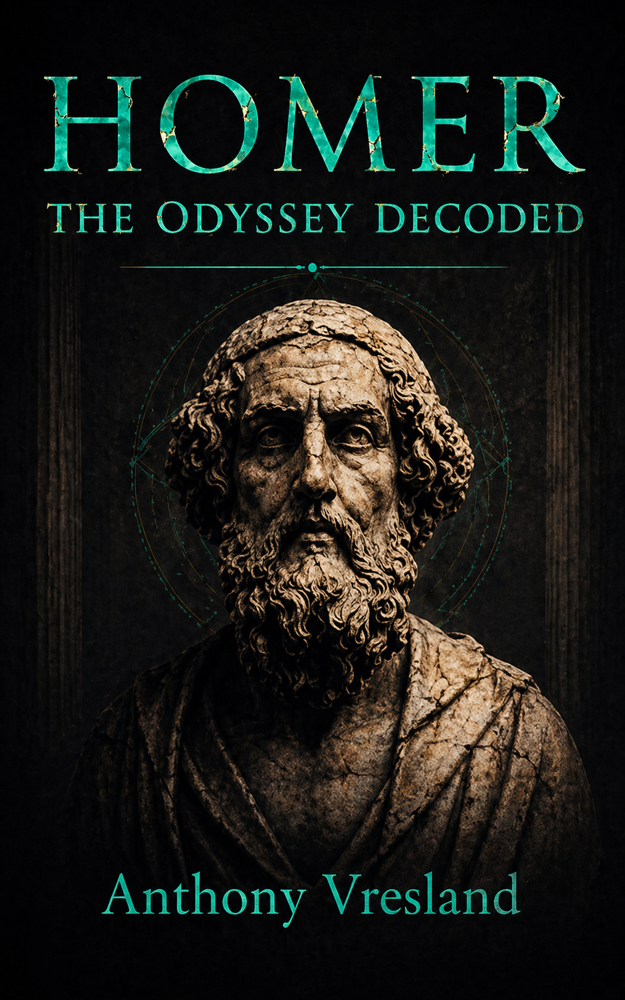

The Homer Decoded Series
THE ODYSSEY DECODED
The Odyssey is not merely a collection of adventures.
It is a map of the soul's return.
The Two Voyages
Odysseus' journey can be read on two levels: the visible voyage across Homer's sea, and an inner journey through desire, illusion, identity, memory and awakening.
The Cyclops, Circe, Calypso, the Sirens, the descent into Hades and finally Ithaca become more than episodes in an ancient story. They become stages in the struggle of consciousness to remember what it is—and where it belongs.
What if Homer was describing not only a journey home, but the conditions required for the soul to return to itself?
The Interpretation
Four stations of the return — read as stages of consciousness.
The Cyclops
The Single EyeThe condition of consciousness trapped in appetite, immediacy and a single perspective.
Circe
Transformation and ForgetfulnessThe danger of forgetting one's nature and becoming absorbed by the conditions of the material world.
The Sirens
The Capturing VoiceKnowledge, desire and fascination can attract attention so completely that the journey itself is forgotten.
Ithaca
The ReturnHomecoming is not simply geographical. The traveller who returns is no longer the consciousness that departed.
These readings are offered as exploration and reflection — one interpretive lens on the poem, not established Homeric scholarship.

The Odyssey Decoded
The soul's return — the journey through illusion to home.
Begin with a free chapter, or begin the return journey today. Layer by layer, the voyage across Homer's sea opens into the map it was always carrying — the conditions required for the soul to come back to itself.